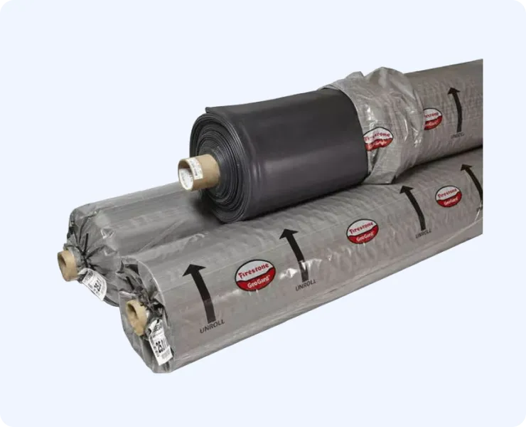

Плёнка для пруда
Бутилкаучук 1.1мм, рулоны 6.1-15.25*30.5м, черный
Цена и наличие
- 1 шт.74 BYN / м²В наличии
Данные на 23.11.2026.
Характеристики
- Производитель
- Firestone
- Материал
- бутилкаучук
- Длина рулона, м
- 30.5
- Толщина, мм
- 1.1
- Ширина рулонов, м
- 6.1, 9.15, 12.2, 15.25
- Длина рулона
- 30.5 м
- Максимальный срок эксплуатации, лет
- 50
- Страна производитель
- США
- Цвет
- черный
Описание
Цена указана за м²
ПЛЕНКА ДЛЯ ПРУДА БУТИЛКАУЧУКОВАЯ FIRESTONE GEOGARD (США), 1.1ММ, РУЛОНЫ ШИРИНОЙ 6.1, 9.15, 12.2, 15.25 МЕТРА, ДЛИНА 30.5М, ЦЕНА ЗА М.КВ. Высококачественная бутилкаучуковая пленка благодаря своим уникальным свойствам может быть с легкостью использована для гидроизоляции многих построенных как с эстетической, так и с практической целью прудов. Растяжимость пленки для пруда – 400%. Срок эксплуатации 50 лет. Компания Firestone разработала множество подробных чертежей, представляющих решения, которые обеспечивают естественный внешний вид водным элементам дизайна и гарантируют их успешную интеграцию в окружающий ландшафт.
Основные области использования
ОСНОВНЫЕ ОБЛАСТИ ИСПОЛЬЗОВАНИЯ FIRESTONE GEOGARD 1.1MM: Декоративные озера и крупные пруды имеют очень сложную техническую конструкцию, поэтому для них требуется высококачественная геомембрана и профессиональная системы для монтажа. — СЕЛЬСКОХОЗЯЙСТВЕННЫЕ ОБЪЕКТЫ Мембрана GeoGard инертна и не выделяет химические вещества, которые могут оказать отрицательное воздействие на фауну и флору и производительность сельскохозяйственного предприятия. — ВОДОЕМЫ ПОЖАРНОГО НАЗНАЧЕНИЯ Использование водоемов для хранения запасов воды для противопожарных целей, когда требуется больший объем воды. — РЕЗЕРВУАРЫ ПОД СНЕГ Высокая устойчивость к проколам и гибкость в холодных условиях делают мембрану GeoGard идеальной для безопасного хранения воды в очень сложной среде. — ВОДНЫЕ ДЕКОРАЦИИ ПАРКОВ И ОБЪЕКТОВ — РЕЗЕРВУАРЫ ДЛЯ ОРОШЕНИЯ Вода является важнейшим ресурсом для выращивания урожаев. Сельхозпроизводители по всему миру выбирают EPDM геомембрану компании Firestone для хранения и транспортировки этого ценного ресурса. — ПЛАВАТЕЛЬНЫЕ СООРУЖЕНИЯ